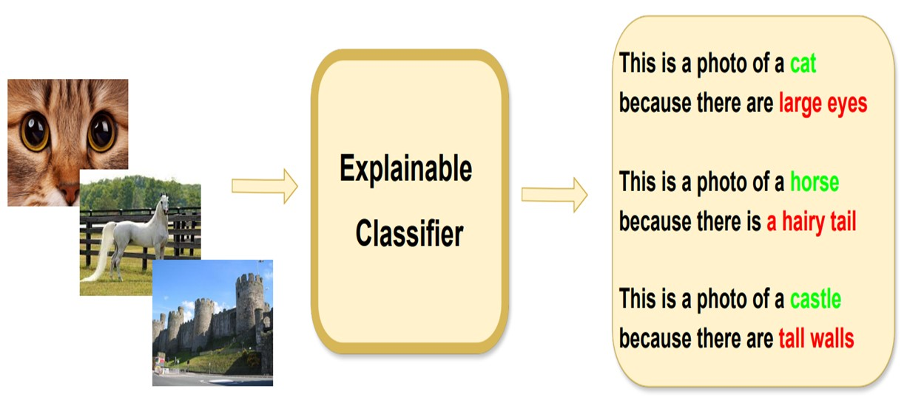
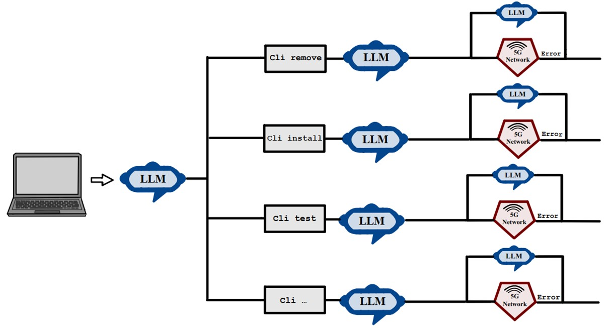

|
Sepehr Kazemi I'm an undergraduate at Sharif University of Technology, Electrical Engineering department. I'm also working as a research assistant at L3S Research Center, working on explainability and bias & fairness in large vision language models. In L3S, I am so fortunate to work with Wolfgang Nejdl, and Ahmet Iscen (Google DeepMind). |

|
ResearchMy general research theme lies at the intersection of machine learning, computer vision, and natural language processing. More specifically, I'm interested in explainability and bias & fairness of large foundation models, language-informed reinforcement learning, knowledge graphs, and commonsense reasoning. |
|
|
Aligning Visual Contrastive Learning Models via Preference Optimization
Amirabbas Afzali*, Borna Khodabandeh*, Ali Rasekh, Mahyar JafariNodeh, Sepehr Kazemi Ranjbar, Simon Gottschalk arxiv, 2024 This paper introduces a novel method for training contrastive learning models using Preference Optimization (PO) to break down complex concepts. Our method systematically aligns model behavior with desired preferences, enhancing performance on the targeted task. |

|
ExIQA: Explainable Image Quality Assessment Using Distortion Attributes
Sepehr Kazemi Ranjbar, Emad Fatemizadeh arxiv, 2024 In this paper, we approach BIQA from a distortion identification perspective, where our primary goal is to predict distortion types and strengths using Vision-Language Models (VLMs), such as CLIP, due to their extensive knowledge and generalizability. Based on these predicted distortions, we then estimate the quality score of the image. |
|

|
ECOR: Explainable CLIP for Object Recognition
Sepehr Kazemi Ranjbar*, Ali Rasekh*, Milad Heidari, Wolfgang Nejdl arxiv, 2024 In this paper, we first propose a mathematical definition of explainability in the object recognition task based on the joint probability distribution of categories and rationales, then leverage this definition to fine-tune CLIP in an explainable manner. |
|

|
LLM for 5G: Network Management
Ali Mamaghani*, Ali Nourian*, Negin Mohtaram*, Alireza Shokrani*, Seyed Mohsen Nasiri*, Sepehr Kazemi Ranjbar*, Alireza Mohammadi, Navid Nikaein, Babak Hossein Khalaj ICMLCN, 2024 The demonstration comprises a user-friendly chatbot, adept at translating everyday English queries into actionable 5G commands, and LLMs serving as generative AIs to dynamically generate configurations tailored to the 5G network environment. |
|
©2024 Sepehr Kazemi. Powered by jonbarron. |